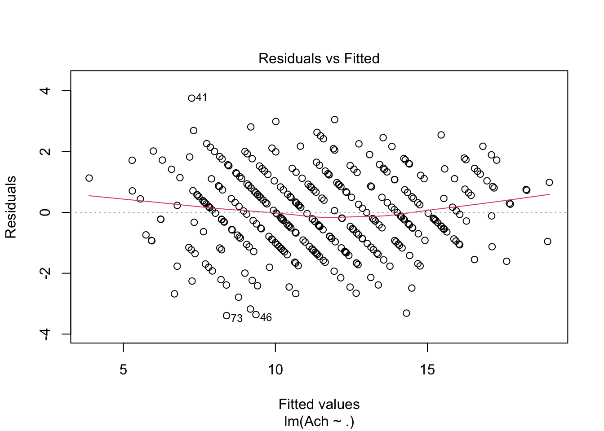
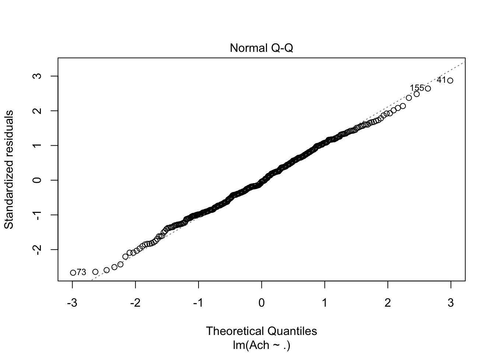
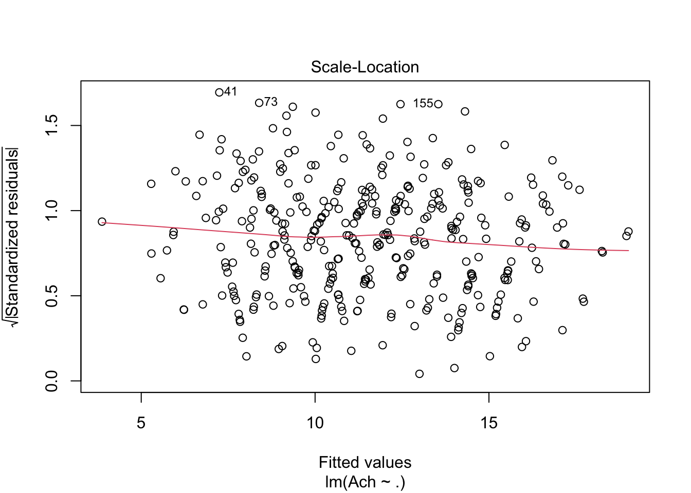
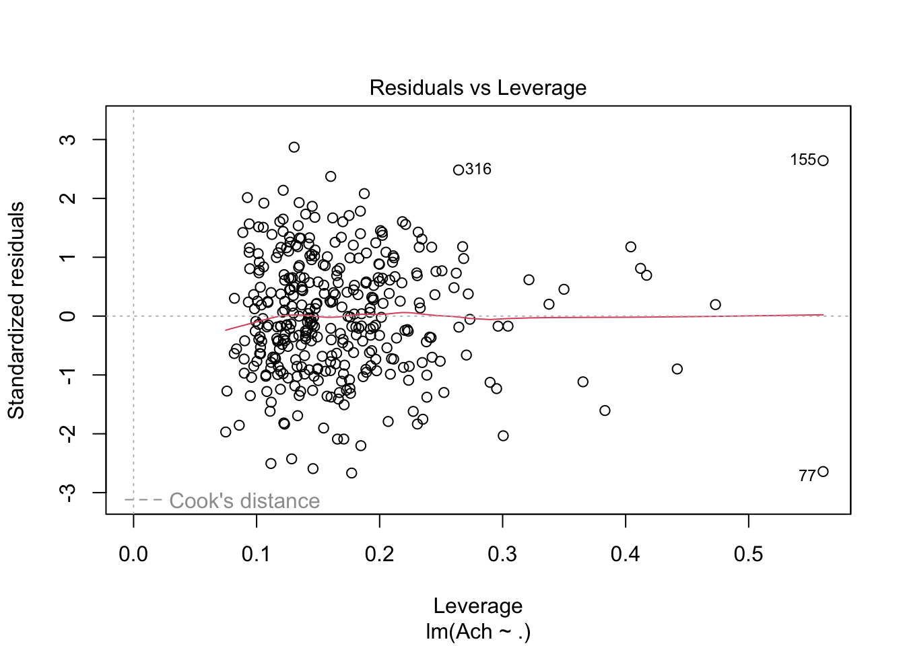

library(dplyr)
Attaching package: 'dplyr'The following objects are masked from 'package:stats':
filter, lagThe following objects are masked from 'package:base':
intersect, setdiff, setequal, unionlibrary(tidymodels)── Attaching packages ────────────────────────────────────── tidymodels 1.0.0 ──✔ broom 1.0.3 ✔ rsample 1.1.1
✔ dials 1.1.0 ✔ tibble 3.1.8
✔ ggplot2 3.4.1 ✔ tidyr 1.3.0
✔ infer 1.0.4 ✔ tune 1.0.1
✔ modeldata 1.1.0 ✔ workflows 1.1.3
✔ parsnip 1.0.4 ✔ workflowsets 1.0.0
✔ purrr 1.0.1 ✔ yardstick 1.1.0
✔ recipes 1.0.5 ── Conflicts ───────────────────────────────────────── tidymodels_conflicts() ──
✖ purrr::discard() masks scales::discard()
✖ dplyr::filter() masks stats::filter()
✖ dplyr::lag() masks stats::lag()
✖ recipes::step() masks stats::step()
• Use tidymodels_prefer() to resolve common conflicts.dat <- read.csv("Math.csv")
glimpse(dat, width=50)Rows: 395
Columns: 28
$ school <chr> "obec.sec", "obec.sec", "ob…
$ gender <chr> "F", "F", "F", "F", "F", "M…
$ age <int> 14, 13, 11, 11, 12, 12, 12,…
$ location <chr> "U", "U", "U", "U", "U", "U…
$ famsize <chr> "GT3", "GT3", "LE3", "GT3",…
$ ParentStat <chr> "A", "T", "T", "T", "T", "T…
$ MomEdu <int> 4, 1, 1, 4, 3, 4, 2, 4, 3, …
$ DadEdi <int> 4, 1, 1, 2, 3, 3, 2, 4, 2, …
$ MomJob <chr> "at_home", "at_home", "at_h…
$ DadJob <chr> "teacher", "other", "other"…
$ StuParent <chr> "mother", "father", "mother…
$ traveltime <int> 2, 1, 1, 1, 1, 1, 1, 2, 1, …
$ readingtime <int> 2, 2, 2, 3, 2, 2, 2, 2, 2, …
$ fail <int> 0, 0, 3, 0, 0, 0, 0, 0, 0, …
$ scholarship <chr> "yes", "no", "yes", "no", "…
$ club_act <chr> "no", "no", "no", "yes", "n…
$ nursery <chr> "yes", "no", "yes", "yes", …
$ higher <chr> "yes", "yes", "yes", "yes",…
$ internet <chr> "no", "yes", "yes", "yes", …
$ InLove <chr> "no", "no", "no", "yes", "n…
$ fam_relation <int> 4, 5, 4, 3, 4, 5, 4, 4, 4, …
$ freetime <int> 3, 3, 3, 2, 3, 4, 4, 1, 2, …
$ goout <int> 4, 3, 2, 2, 2, 2, 4, 4, 2, …
$ Drink_alc <int> 1, 1, 2, 1, 1, 1, 1, 1, 1, …
$ health <int> 3, 3, 3, 5, 5, 5, 3, 1, 1, …
$ absences <int> 6, 4, 10, 2, 4, 10, 0, 6, 0…
$ PreTest <int> 5, 5, 7, 15, 6, 15, 12, 6, …
$ Ach <int> 6, 6, 10, 15, 10, 15, 11, 6…rec <- recipe(Ach~., data=dat) %>%
step_string2factor(all_nominal_predictors()) %>%
step_mutate(MomEdu = factor(MomEdu, levels=c(0,1,2,3,4),
labels=c("none","primary","highsch1","highsch2","grad")),
DadEdi = factor(DadEdi, levels=c(0,1,2,3,4),
labels=c("none","primary","highsch1","highsch2","grad")),
traveltime = factor(traveltime, levels=c(1,2,3,4),
labels=c("<15mins",
"15-30mins",
"30-60mins",
">60mins")),
readingtime = factor(readingtime, levels=c(1,2,3,4),
labels=c("<2hours",
"2-5hours",
"5-10hours",
">10hours")),
fam_relation = factor(fam_relation, levels=c(1,2,3,4,5),
labels=c("worst",
"bad",
"fair",
"good",
"very good")),
freetime = factor(freetime, levels=c(1,2,3,4,5),
labels=c("very little",
"litter",
"moderate",
"high",
"highest")),
goout = factor(goout, levels=c(1,2,3,4,5),
labels=c("very little",
"litter",
"moderate",
"high",
"highest")),
Drink_alc = factor(Drink_alc, levels=c(1,2,3,4,5),
labels=c("very little",
"litter",
"moderate",
"high",
"highest")),
health = factor(health, levels=c(1,2,3,4,5),
labels=c("worst",
"bad",
"fair",
"good",
"very good"))
)
temp1 <- rec %>%
prep(NULL) %>%
juice()
glimpse(rec, width=50 )List of 7
$ var_info : tibble [28 × 4] (S3: tbl_df/tbl/data.frame)
..$ variable: chr [1:28] "school" "gender" "age" "location" ...
..$ type :List of 28
..$ role : chr [1:28] "predictor" "predictor" "predictor" "predictor" ...
..$ source : chr [1:28] "original" "original" "original" "original" ...
$ term_info : tibble [28 × 4] (S3: tbl_df/tbl/data.frame)
..$ variable: chr [1:28] "school" "gender" "age" "location" ...
..$ type :List of 28
..$ role : chr [1:28] "predictor" "predictor" "predictor" "predictor" ...
..$ source : chr [1:28] "original" "original" "original" "original" ...
$ steps :List of 2
..$ :List of 7
.. ..$ terms :List of 1
.. .. ..- attr(*, "class")= chr [1:2] "quosures" "list"
.. ..$ role : logi NA
.. ..$ trained: logi FALSE
.. ..$ levels : NULL
.. ..$ ordered: logi FALSE
.. ..$ skip : logi FALSE
.. ..$ id : chr "string2factor_8qe5K"
.. ..- attr(*, "class")= chr [1:2] "step_string2factor" "step"
..$ :List of 5
.. ..$ role : chr "predictor"
.. ..$ trained: logi FALSE
.. ..$ inputs :List of 9
.. .. ..- attr(*, "class")= chr [1:2] "quosures" "list"
.. ..$ skip : logi FALSE
.. ..$ id : chr "mutate_lzcFo"
.. ..- attr(*, "class")= chr [1:2] "step_mutate" "step"
$ template : tibble [395 × 28] (S3: tbl_df/tbl/data.frame)
..$ school : chr [1:395] "obec.sec" "obec.sec" "obec.sec" "obec.sec" ...
..$ gender : chr [1:395] "F" "F" "F" "F" ...
..$ age : int [1:395] 14 13 11 11 12 12 12 13 11 11 ...
..$ location : chr [1:395] "U" "U" "U" "U" ...
..$ famsize : chr [1:395] "GT3" "GT3" "LE3" "GT3" ...
..$ ParentStat : chr [1:395] "A" "T" "T" "T" ...
..$ MomEdu : int [1:395] 4 1 1 4 3 4 2 4 3 3 ...
..$ DadEdi : int [1:395] 4 1 1 2 3 3 2 4 2 4 ...
..$ MomJob : chr [1:395] "at_home" "at_home" "at_home" "health" ...
..$ DadJob : chr [1:395] "teacher" "other" "other" "services" ...
..$ StuParent : chr [1:395] "mother" "father" "mother" "mother" ...
..$ traveltime : int [1:395] 2 1 1 1 1 1 1 2 1 1 ...
..$ readingtime : int [1:395] 2 2 2 3 2 2 2 2 2 2 ...
..$ fail : int [1:395] 0 0 3 0 0 0 0 0 0 0 ...
..$ scholarship : chr [1:395] "yes" "no" "yes" "no" ...
..$ club_act : chr [1:395] "no" "no" "no" "yes" ...
..$ nursery : chr [1:395] "yes" "no" "yes" "yes" ...
..$ higher : chr [1:395] "yes" "yes" "yes" "yes" ...
..$ internet : chr [1:395] "no" "yes" "yes" "yes" ...
..$ InLove : chr [1:395] "no" "no" "no" "yes" ...
..$ fam_relation: int [1:395] 4 5 4 3 4 5 4 4 4 5 ...
..$ freetime : int [1:395] 3 3 3 2 3 4 4 1 2 5 ...
..$ goout : int [1:395] 4 3 2 2 2 2 4 4 2 1 ...
..$ Drink_alc : int [1:395] 1 1 2 1 1 1 1 1 1 1 ...
..$ health : int [1:395] 3 3 3 5 5 5 3 1 1 5 ...
..$ absences : int [1:395] 6 4 10 2 4 10 0 6 0 0 ...
..$ PreTest : int [1:395] 5 5 7 15 6 15 12 6 16 14 ...
..$ Ach : int [1:395] 6 6 10 15 10 15 11 6 19 15 ...
$ levels : NULL
$ retained : logi NA
$ requirements:List of 1
..$ bake: Named logi(0)
.. ..- attr(*, "names")= chr(0)
- attr(*, "class")= chr "recipe"temp2<- rec %>%
step_normalize(all_numeric()) %>%
prep(NULL) %>%
juice()
fit <- lm(Ach~., data=temp1)
summary(fit)$coefficients %>% data.frame() %>%
arrange(desc(abs(t.value))) Estimate Std..Error t.value Pr...t..
PreTest 1.0897175544 0.05048528 21.5848589736 2.243350e-65
InLoveyes -1.0438469345 0.31582483 -3.3051452145 1.052038e-03
absences 0.0487773352 0.01882898 2.5905457560 1.000111e-02
age -0.3285557517 0.14399577 -2.2817042464 2.313367e-02
scholarshipyes 0.9821877579 0.45152977 2.1752447276 3.031067e-02
MomEduprimary -3.0787480975 1.65949641 -1.8552303415 6.444162e-02
(Intercept) 6.9271970253 3.81752459 1.8145782311 7.048306e-02
gooutmoderate 1.0738681687 0.64332037 1.6692587605 9.600029e-02
fail -0.3699539005 0.22788546 -1.6234203764 1.054401e-01
gooutlitter 1.0423278293 0.65140029 1.6001341284 1.105114e-01
DadJobservices 1.1085296735 0.69452567 1.5960960346 1.114102e-01
MomEduhighsch1 -2.5993219142 1.65511235 -1.5704806468 1.172473e-01
healthbad -0.9322486847 0.59529658 -1.5660239316 1.182871e-01
DadJobhealth 1.4639005026 0.94298127 1.5524173612 1.215066e-01
readingtime>10hours -0.9867660278 0.64784033 -1.5231623885 1.286615e-01
DadJobother 1.0015529695 0.67398576 1.4860150212 1.382156e-01
schoolobec.sec -0.7385356963 0.52401606 -1.4093760776 1.596516e-01
MomEduhighsch2 -2.3066392522 1.67304550 -1.3787068227 1.689051e-01
traveltime15-30mins -0.4022741516 0.33657195 -1.1952099912 2.328504e-01
DadEdigrad -2.3837514636 2.03725128 -1.1700822045 2.427996e-01
traveltime30-60mins -0.7579452204 0.65495751 -1.1572433460 2.479974e-01
Drink_alclitter -0.4426652522 0.38350494 -1.1542621834 2.492155e-01
DadEdihighsch1 -2.1954050859 2.00053962 -1.0974064531 2.732519e-01
fam_relationbad -1.2750570756 1.21106786 -1.0528370178 2.931745e-01
club_actyes -0.3070084558 0.29177017 -1.0522270149 2.934538e-01
famsizeLE3 0.3379743902 0.32871683 1.0281627111 3.046151e-01
goouthigh 0.6844830043 0.67486066 1.0142582742 3.111915e-01
MomJobteacher -0.6528802105 0.70849264 -0.9215059878 3.574495e-01
MomEdugrad -1.5765485211 1.72418033 -0.9143756582 3.611771e-01
DadEdihighsch2 -1.7034137253 2.00357218 -0.8501883487 3.958276e-01
goouthighest 0.5942587177 0.72423267 0.8205356423 4.124943e-01
ParentStatT -0.3535990104 0.48385730 -0.7307919245 4.654171e-01
MomJobother 0.3351334988 0.46646232 0.7184578181 4.729758e-01
Drink_alchighest 0.7123868787 1.01408880 0.7024896428 4.828617e-01
internetyes 0.2850104643 0.40775877 0.6989683181 4.850568e-01
genderM 0.2208565696 0.33144458 0.6663453963 5.056490e-01
healthvery good -0.3090084776 0.49061377 -0.6298406093 5.292282e-01
DadEdiprimary -1.1809140633 2.00061865 -0.5902744458 5.554046e-01
Drink_alcmoderate 0.3477309311 0.63139013 0.5507386219 5.821799e-01
healthgood -0.2757270468 0.55599449 -0.4959168709 6.202783e-01
DadJobteacher 0.4157010336 0.87590910 0.4745938050 6.353857e-01
fam_relationgood -0.4422854409 1.03223673 -0.4284728765 6.685822e-01
healthfair -0.2093494066 0.53010900 -0.3949176586 6.931550e-01
MomJobservices 0.2050638998 0.52895497 0.3876774225 6.985010e-01
fam_relationfair -0.3966396446 1.06334377 -0.3730116798 7.093757e-01
higheryes -0.2625630463 0.70690065 -0.3714284972 7.105532e-01
traveltime>60mins 0.3774824534 1.06165348 0.3555608876 7.223932e-01
StuParentother -0.1991556010 0.65454958 -0.3042635853 7.611160e-01
locationU 0.1121932387 0.38706740 0.2898545263 7.721069e-01
fam_relationvery good -0.3002804898 1.04755755 -0.2866482028 7.745589e-01
freetimehigh 0.1920349771 0.71862962 0.2672238550 7.894612e-01
Drink_alchigh 0.2428569346 0.96485929 0.2517019194 8.014258e-01
nurseryyes -0.0700113942 0.36483572 -0.1918984102 8.479380e-01
freetimehighest 0.1433275672 0.82752667 0.1731999369 8.625989e-01
readingtime5-10hours -0.0811004712 0.51650076 -0.1570190736 8.753244e-01
freetimemoderate -0.0853904035 0.69867023 -0.1222184650 9.027993e-01
StuParentmother -0.0373811460 0.36281797 -0.1030300303 9.180008e-01
readingtime2-5hours -0.0059968914 0.36110497 -0.0166070587 9.867600e-01
MomJobhealth 0.0053796001 0.74742499 0.0071975117 9.942616e-01
freetimelitter -0.0001745365 0.73221258 -0.0002383686 9.998100e-01temp1 %>%
filter(Ach>0)->temp1
fit <- lm(Ach~., data=temp1)
summary(fit)$coefficients %>% data.frame() %>%
arrange(desc(abs(t.value))) Estimate Std..Error t.value Pr...t..
PreTest 0.8536319319 0.02858745 29.860375543 1.933709e-91
absences -0.0399934859 0.01067523 -3.746380443 2.155027e-04
(Intercept) 6.4604339968 2.12087170 3.046122023 2.526179e-03
age -0.1893871352 0.08177224 -2.316032213 2.123730e-02
healthfair -0.5619309220 0.29352516 -1.914421678 5.652699e-02
healthvery good -0.4576148812 0.27006193 -1.694481264 9.122211e-02
freetimehighest -0.7610320774 0.47033882 -1.618050733 1.067131e-01
internetyes 0.3276033385 0.22861607 1.432984734 1.529140e-01
scholarshipyes -0.3452704547 0.25015400 -1.380231583 1.685533e-01
freetimelitter -0.5521059861 0.41621105 -1.326504879 1.856916e-01
locationU 0.2705717725 0.21843875 1.238661983 2.164488e-01
readingtime2-5hours -0.2503706491 0.20538246 -1.219045923 2.237941e-01
ParentStatT -0.3107534100 0.26941765 -1.153426329 2.496628e-01
freetimehigh -0.4524118445 0.41252695 -1.096684343 2.736678e-01
nurseryyes -0.2097155586 0.20737693 -1.011277194 3.127069e-01
higheryes -0.4472498434 0.45840889 -0.975657008 3.300285e-01
traveltime>60mins 0.5694726055 0.61595751 0.924532289 3.559598e-01
MomJobhealth 0.3552943897 0.42007365 0.845790712 3.983504e-01
MomEduprimary -0.7356203820 0.89613917 -0.820877385 4.123745e-01
DadJobteacher 0.3889678097 0.50713663 0.766988200 4.436978e-01
healthbad -0.2460003376 0.33425139 -0.735974017 4.623274e-01
DadEdihighsch1 -0.7825442509 1.07072554 -0.730854196 4.654444e-01
MomJobservices 0.2193032024 0.30804404 0.711921597 4.770722e-01
goouthigh -0.2836282780 0.40026570 -0.708600014 4.791285e-01
gooutlitter 0.2697366196 0.38424774 0.701986228 4.832375e-01
DadJobother 0.2694844920 0.38903460 0.692700583 4.890387e-01
freetimemoderate -0.2757155029 0.40084685 -0.687832524 4.920951e-01
healthgood -0.2160581536 0.31441249 -0.687180569 4.925052e-01
DadEdihighsch2 -0.6508534329 1.07269658 -0.606745136 5.444836e-01
InLoveyes -0.1063043983 0.18157493 -0.585457454 5.586847e-01
fail 0.0819653942 0.14462385 0.566748814 5.713129e-01
DadEdigrad -0.6067438598 1.09213200 -0.555559090 5.789305e-01
MomJobteacher -0.2211465642 0.40019216 -0.552600943 5.809523e-01
schoolobec.sec 0.1578836970 0.29303200 0.538793370 5.904331e-01
fam_relationvery good 0.3191483957 0.60064923 0.531339056 5.955810e-01
DadEdiprimary -0.5632365638 1.07238823 -0.525217033 5.998242e-01
traveltime15-30mins -0.0920593441 0.18921122 -0.486542724 6.269413e-01
readingtime5-10hours -0.1389903971 0.29060538 -0.478278809 6.328036e-01
traveltime30-60mins -0.1811174261 0.37938420 -0.477398442 6.334295e-01
Drink_alcmoderate 0.1633802103 0.35351830 0.462154886 6.443086e-01
goouthighest -0.1930461205 0.42571650 -0.453461685 6.505475e-01
DadJobservices 0.1804201560 0.40279792 0.447917303 6.545394e-01
MomEduhighsch1 -0.3816924422 0.89658634 -0.425717442 6.706221e-01
Drink_alclitter -0.0726442975 0.21844228 -0.332556036 7.397040e-01
famsizeLE3 0.0542993599 0.18218455 0.298045902 7.658765e-01
DadJobhealth -0.1566132885 0.53015422 -0.295410813 7.678865e-01
MomEdugrad -0.2544799732 0.93155576 -0.273177393 7.849067e-01
readingtime>10hours -0.0991508085 0.36686405 -0.270265804 7.871435e-01
Drink_alchighest -0.1332055265 0.54847605 -0.242864802 8.082778e-01
MomEduhighsch2 -0.2186609019 0.90812248 -0.240783491 8.098891e-01
MomJobother 0.0581880761 0.27163821 0.214211672 8.305290e-01
fam_relationfair 0.1269599015 0.61452525 0.206598348 8.364651e-01
gooutmoderate -0.0767579892 0.38127301 -0.201320278 8.405860e-01
fam_relationbad -0.1374326369 0.70481402 -0.194991349 8.455330e-01
fam_relationgood -0.0449497431 0.59374176 -0.075705881 9.397041e-01
club_actyes 0.0098124597 0.16629244 0.059007252 9.529860e-01
StuParentmother 0.0104990532 0.20127832 0.052161868 9.584348e-01
StuParentother -0.0199094721 0.38458057 -0.051769314 9.587473e-01
Drink_alchigh 0.0204918422 0.51789394 0.039567643 9.684644e-01
genderM -0.0001972624 0.18395236 -0.001072356 9.991451e-01plot(fit)



library(car)Loading required package: carData
Attaching package: 'car'The following object is masked from 'package:purrr':
someThe following object is masked from 'package:dplyr':
recode